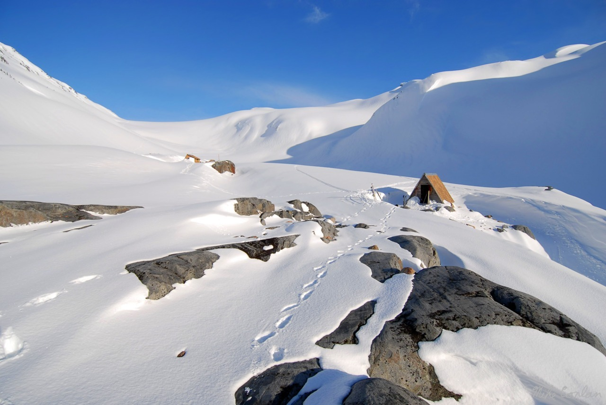
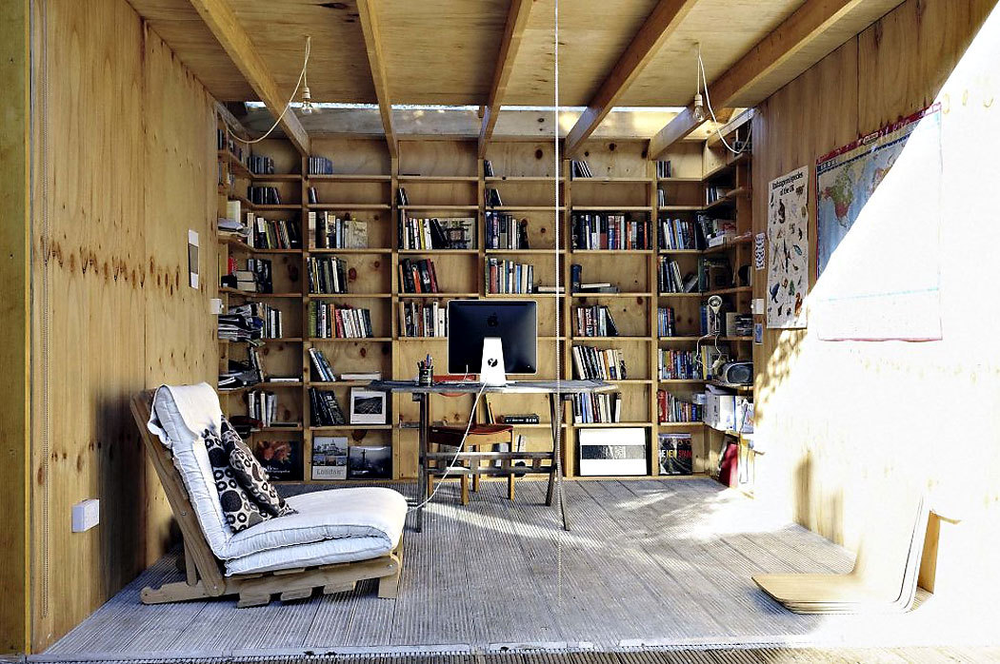
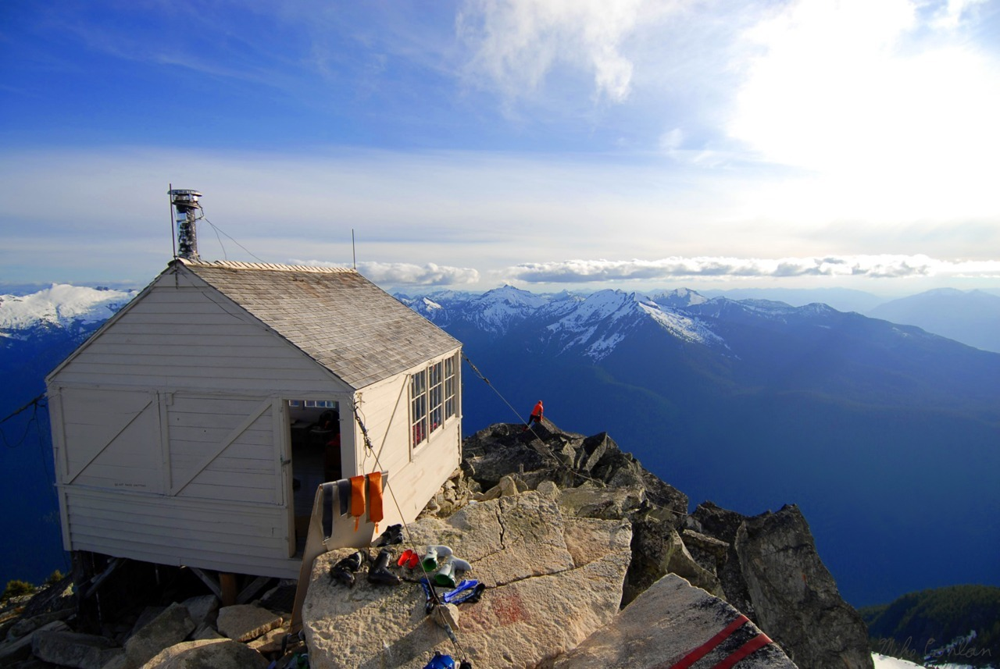
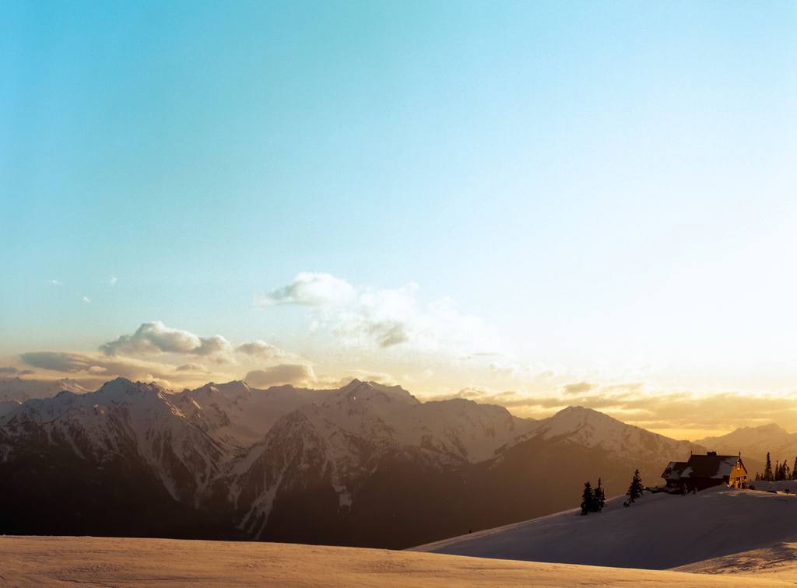
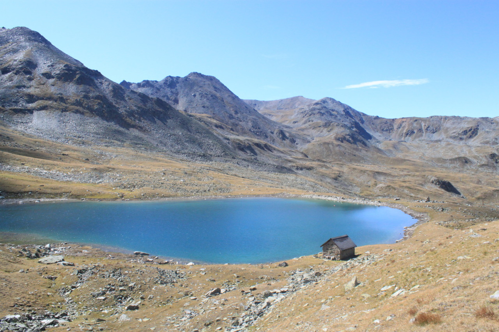

Sat, 02 Jun 2012 17:52:00 · cabin · wanderlust · swiss · washington · travel · mountain · escape
when was the last time you enjoy time and space





When was the last time you enjoy time and space alone? Comfortably and exclusively dedicate to yourself with no looming deadline ahead or string of future engagements waiting just around the corner? When was the last time you were able to just stop and enjoy the moment away from your hectic schedule?
In an ideal world, none should suffer from burnout. Especially if we do things we love. Things we are passionate about. Then again, feeling of displacement (or disconnection?) is something that many of us easily dismissed. I beg to disagree though. The hardest part is perhaps to admit that we’ve (nearly) reach our breaking point, yet we marched on. And it usually end up in the diminishing quality in a lot of aspects in our life. Unfortunately, there’s no exact timeline as each individual has various degree of endurance.
But let’s say we are smart enough to recognize early symptoms of burnout. What then? Does this mean a long break, or what we refer as sabbatical, is in order? Or would a short escapade suffice?
I prefer to see this kind of recuperative time off as the “go away and try to remember whether you still like yourself” escape. Doesn’t matter what we want to call it. The goal is to distance oneself away from anything familiar. At least for a little while.
Part of me wonder whether, if I took an extended generative sabbatical, I would discover some other, deeper, better passion… one that I suspect but can’t confirm while embedded in the place I’ve chosen. For all these reasons, I say the purpose of any sabbatical is to press our boundaries, reconnect our inner narratives, and ask ourselves the dangerous questions – all the while adding quality to our lives as creatives.
Well… for some of us who might only be able to afford short time away from our routine, the folks at Beaver Brook curated this awesome collections of remote hideouts. Don’t be put off by the site, which is naughtily called Cabin Porn… I think is simply brilliant.
Ain’t it great to learn that there’s always a quiet place somewhere for each and one of us… to escape to.